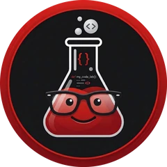

Programas gratis que se quedan en tu computadora.
Hago herramientas simples para el trabajo de todos los días. No tienen publicidad, no te piden una cuenta y no suben tus archivos a ningún lado.
Programas
Por qué sin internet
Cada vez hay más ataques informáticos, y la inteligencia artificial hace que encontrar fallas y aprovecharlas sea más rápido y más fácil que nunca. Cuando subís un documento a una página, deja de depender de vos: puede quedar guardado en un servidor, filtrarse en un hackeo o usarse de formas que nunca elegiste.
Por eso hago herramientas que funcionan sin conexión. Si tus datos sensibles (un DNI, un recibo de sueldo, un contrato) nunca salen de tu computadora, no quedan expuestos en ningún lado.

Quién está detrás
Soy Nicolás Pacheco, aunque todos me dicen Pache. Tengo 32 años, soy Senior Software Developer y Analista de Sistemas recibido en ORT.
Pache Labs es mi proyecto personal: herramientas que armo en mi tiempo libre para resolver problemas reales, gratis y pensadas para que tus datos se queden con vos.
¿Qué programa te serviría?
Si hay algo que hoy resolvés subiendo archivos a una página y te gustaría hacerlo sin internet, contámelo. Las ideas que más se repiten son las próximas que armo.
También podés escribirme a pache.labs@gmail.com.